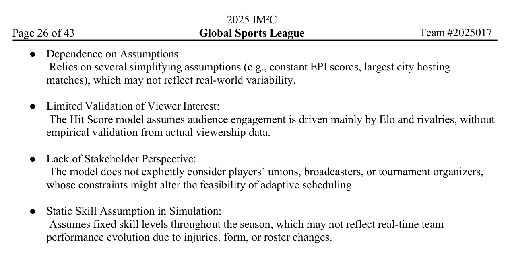

Session 6
Refine and test your model
Last week you built a model of electric vehicles in forty minutes and gave a number for 2030. Today you try to break that model: you test it on a figure it has not seen, you change its inputs one at a time, and you turn your number into a range you can defend.
From today you may search, and use AI for its named jobs. Every source is written down, with who published it and when. Every use of AI goes in your team's AI Log. An AI's word is not a source: open the source yourselves.
1Cold start
- Team · 5 min No card and no hint. You gave a number for 2030. How could you find out today whether to believe it? Plan two tests you could carry out with what you have. The Team lead writes them down.
You cannot wait until 2030. A judge cannot either.
2Team time
35 minutes. You have your page from the Mini Competition and last week's data sheet. Three of these jobs can run at the same time. You will not finish every question; the test on a hidden figure and the table of changes matter most.
- Team lead Write a time plan for the 35 minutes: who does which job, and by when.
- Modeller Test on a figure the model has not seen. Cover the September 2026 figure. Using only the end of 2020 (18,500 electric vehicles, about 2.0% of all vehicles) and October 2023 (7.7%), make your model predict September 2026. The real figure was 20.1%. How far out was your model, and in which direction? Do the same for one other kind of model.
- Data lead Change one input at a time. List every number your answer for 2030 depends on. In a sheet, raise one of them by 10% and keep the rest as they were. Write down the new answer. Lower it by 10% and do the same. Repeat for each input.
- Writer Find one more figure yourselves that would make your model better: for example, the total number of vehicles in Hong Kong now and five years ago. Write down who published it, the date, and exactly what is counted.
- Team Give your answer for the end of 2030 as a range, with a reason for each end, and name the one input your answer depends on most.
- Every team Give each input a number: the percentage change in the answer, divided by the percentage change in the input. Which inputs score above 1? What does a score above 1 mean for someone who has to measure that input?
- Every team For the straight-line model, show that the answer for the end of 2030 is exactly 2.455b − 1.455a, where a is the share in October 2023 and b is the share in September 2026. Use this to explain why raising b by 10% and lowering it by 10% move the line's answer by the same amount, while for the ceiling model they do not.
- Extra Raise two inputs by 10% at once. Is the change in the answer the sum of the two changes you found separately? Try it for the straight line and for one other model.
Hint card: open only after ten minutes of trying
Write a for the earlier share and b for the later share, both in per cent. Write d for the years between them, and t for the years from the later one to the date you want.
- Straight line: P = b + (b − a) × t ÷ d
- Compound growth: P = b × (b ÷ a)t ÷ d
- Growth with a ceiling: first R = [b ÷ (100 − b)] × {[b ÷ (100 − b)] ÷ [a ÷ (100 − a)]}t ÷ d, then P = 100 × R ÷ (1 + R)
For the end of 2030: a = 7.7, b = 20.1, d = 2.92, t = 4.25. For the test on a hidden figure: a = 2.0, b = 7.7, d = 2.83, t = 2.92.
A table of changes in a sheet. Put each input in its own cell, and write the answer as one formula that uses those cells. Then you can change one cell and read the new answer.
3What you found
Last week each team gave one number. This week each gives a range. A range is not a weaker answer: it is a number that tells the reader how far to trust it.
The test on a hidden figure: open only when your team has tried it
Each model is fitted to the end of 2020 and October 2023 only, then asked about September 2026.
| Model | Predicted for September 2026 | Against the real 20.1% |
|---|---|---|
| Straight line | 13.6% | 6.5 points too low |
| Growth with a ceiling | 26.2% | 6.1 points too high |
| Compound growth | 30.8% | 10.7 points too high |
No model passed. The truth fell between the straight line and the ceiling, and compound growth was the furthest out. So for 2030, "between 38% and 56%" is an honest answer, and 81% is not.
Change one input, and only one, and see how far the answer moves. Give each input a number:
sensitivity = (percentage change in the answer) ÷ (percentage change in the input)
Above 1, the model magnifies a mistake in that input. Below 1, it shrinks it. For the ceiling model, whose answer is 56%:
| Input raised by 10% | The answer | Sensitivity |
|---|---|---|
| Share in September 2026 | rises by 13%, to 62.8% | 1.3 |
| Total vehicles by the end of 2030 | falls by 9%, to 50.6% | 0.9 |
| Share in October 2023 | falls by 7%, to 51.9% | 0.7 |
The newest figure matters most, so it is the one to check first. And the choice of model matters more than any input: the three models give 38%, 56% and 81% from exactly the same figures.
Sensitivity explorer
Three inputs and three models. Each slider changes one input by up to 20%. The dark edge on the right of each bar is 100%.
- Move one slider at a time. Which input moves the answers most?
- Reset, and read down the column: 38, 81, 56. Why does the choice of model move the answer more than any input does?
- The October 2023 figure came from a news report, not from the Government's own page. How much does our answer depend on it?
Go further. These are not needed for the session. They are for anyone who wants more mathematics.
- For the model "answer = k × input", show that the sensitivity is exactly 1 whatever k is. For "answer = k ÷ input", show that raising the input by 10% lowers the answer by 9.1%, not 10%. Which of the three inputs in the table behaves like this?
- For "answer = k × inputn", show that a small percentage change in the input gives about n times that percentage change in the answer. Check it with the basketballs from the first meeting, where the ball's width is cubed.
- For the straight-line model, P = 2.455b − 1.455a. Find its sensitivity to b and to a exactly. Show that the two add up to exactly 1.
- Raise both a and b by 10%. Show that the answer rises by exactly 10% in the straight-line model, and also in the compound-growth model, P = b × (b ÷ a)1.455. Explain why this is the same fact as question 3. Then notice that for compound growth the two separate changes, +21.5 and −10.5 points, do not add up to the joint change of +8.1. Why does adding work for the line and not for the curve?
4Paper study: an honest weakness
Another winning paper on the league problem from Session 2. It ends by listing the strengths and the weaknesses of its own model.

- Team · 2 min Find the weakness that admits something was never checked against real data. Did admitting it help the team or hurt it?
It is the second: the model of viewer interest was built "without empirical validation from actual viewership data". The paper still won. A judge trusts a team that knows where its model is thin, and distrusts one that claims no weaknesses at all.
5Team Paper: this week's section
Now do to your own model of the Hall Problem what you have just done to the electric vehicles.
- Team · 7 min Change the rate by 10%, then the number of students, then one input of your own. The Writer types which input matters most, one strength of your model and one weakness, each with evidence. A frame to start from: "Our answer depends most on … If it is 10% out, our answer changes by … A strength of our model is … because … A weakness is … because …"
"Our model is simple" is not evidence. "Our three counts at the C11 door were within 10% of each other" is.
6Before Session 7
About 40 minutes this week, on the Hall Problem: your paper is nearly complete.
- Data lead Finish the table of changes for your hall model in your sheet: each input raised and lowered by 10%, with the new answer and the sensitivity.
- Team Find your best plan. Read "Two tools for the decision" on the Hall Problem page. Use the bottleneck rule to find the slowest stage of each stream, and the ordering rule to choose the order of leaving. By your own measure of "best", how much better is your plan than Plan A?
- Team Finish this week's section of the Team Paper: a short sensitivity analysis, then two strengths and two weaknesses, each with evidence. Go back to your assumptions and add two lines to each: where it is used in the model, and what would happen if it were wrong. Update the 50-word summary at the top.
- Extra Think about which role you should keep for the competitions, and why. Each team proposes its fixed roles next week.
Next Thursday, Session 7: your six sections become one paper. Roles move on one place for the last time.